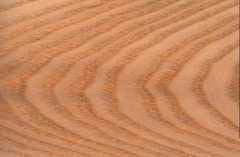
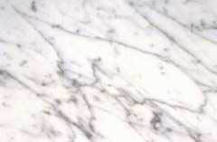

| WHITEASH |  |
|---|---|
| WHITEOAK |  |
| CARRARA |  |
WhiteAsh
WhiteAsh es ofrecido en dos tipos de formatos y versiones. Tanto en formato laminado como en formato macizo, los cortes son ofrecidos en forma longitudinal o transversal. En la imagen se puede observar el corte transversal que expone en toda su magnitud el veteado en forma de anillo de esta madera. Esta característica sumada al color claro de la madera, ofrece una gran variedad de posibilidades en la construcción de muebles o revestimientos en general. Se trata de una madera blanda que permite un tratamiento de la misma muy sencillo, brindando una gran maniobrabilidad en terminaciones delicadas.
WhiteOak
Una madera de gran calidad, sólo para exquisitos. WhiteOak es ofrecido en formato de laminado y cortes macizo. Su gran firmeza, coloración y veteado la hace especial en la confección de muebles de todo tipo, especialmente de oficinas. Imagine una oficina equipada con muebles en este tipo de madera y realizados a sus medidas y necesidades. Sin duda obtendrá una perfecta y excelente combinación de calidez, seriedad y estilo. Añada una adecuada iluminación y conseguirá la oficina perfecta para realizar sus estudios, trabajos y/o negocios.
Carrara
Carrara es un marmol de gran utilidad en la construcción de mesadas, brindando un ambiente de trabajo de gran personalidad y estilo. Su color claro característico, permite combinar los muebles de cocina con accesorios oscuros brindando un contraste dificil de obtener en otros tipos de piedras. Gracias a su robustez, soporta golpes accidentales de gran magnitud, evitando el desgaste por el uso prolongado al mismo tiempo que brinda una gran sensación de seguridad.